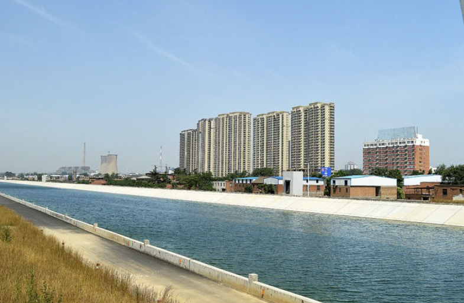

南水北调
“南水北调”即“南水北调工程”，是中华人民共和国的战略性工程，分东、中、西三条线路，东线工程起点位于江苏扬州江都水利枢纽；中线工程起点位于汉江中上游丹江口水库，供水区域为河南，河北，北京，天津四个省（市）。
工程方案构想始于1952年国家主席毛泽东视察黄河时提出。自此，在历经分析比较50多种方案后，调水方案获得一大批富有价值的成果。南水北调工程规划区涉及人口4.38亿人，调水规模448亿立方米。工程规划的东、中、西线干线总长度达4350公里。 东、中线一期工程干线总长为2899公里，沿线六省市一级配套支渠约2700公里。
2012年9月，南水北调中线工程丹江口库区移民搬迁全面完成。南水北调工程主要解决我国北方地区，尤其是黄淮海流域的水资源短缺问题，规划区人口4.38亿人。共有东线、中线和西线三条调水线路，通过三条调水线路与长江、黄河、淮河和海河四大江河的联系，构成以“四横三纵”为主体的总体布局，以利于实现中国水资源南北调配、东西互济的合理配置格局。
南水北调中线工程、南水北调东线工程（一期）已经完工并向北方地区调水。西线工程截至目前，尚处于规划阶段，没有开工建设。
1历史沿革
项目建议前期
1952年，毛泽东同志在视察黄河时提出：“南方水多，北方水少，如有可能，借点水来也是可以的。”这也是南水北调的宏伟构想首次提出。
1953年2月16日，毛泽东在新中国成立后第一次到武汉，视察了汉水两岸，坐木船浏览了东湖。在“长江”舰上，毛泽东问林一山：“南方水多，北方水少，能不能借点水给北方？”轮船快抵达南京时，毛泽东对林一山说：三峡问题暂时不考虑开工，我只是先摸个底，但南水北调工作要抓紧。
1958年8月，《中共中央关于水利工作的指示》颁布，第一次正式提出南水北调。
1959年，中科院、水电部在北京召开了“西部地区南水北调考察研究工作会议”，确定南水北调指导方针是：“蓄调兼施，综合利用，统筹兼顾，南北两利，以有济无，以多补少，使水尽其用，地尽其利。”
1979年，五届全国人大一次会议通过的《政府工作报告》正式提出：“兴建把长江水引到黄河以北的南水北调工程”。
项目研究论
1979年12月，水利部正式成立南水北调规划办公室，统筹领导协调全国的南水北调工作。
1987年7月，国家计委正式下达通知，决定将南水北调西线工程列入“七五”超前期工作项目。
1991年4月，七届全国人大四次会议将“南水北调”列入“八五”计划和十年规划。
1992年10月，中国共产党第十四次全国代表大会把“南水北调”列入中国跨世纪的骨干工程之一。
1995年12月，南水北调工程开始全面论证。
2000年6月5日，南水北调工程规划有序展开，经过数十年研究，南水北调工程总体格局定为西、中、东三条线路，分别从长江流域上、中、下游调水。
项目审批期
2002年10月10日，中共中央政治局常务委员会会议审议并通过了经国务院同意的《南水北调工程总体规划》。
2002年12月23日，国务院正式批复《南水北调总体规划》。
工程建设期
2002年12月27日，南水北调工程正式开工。江苏段三潼宝工程和山东段济平干渠工程成为南水北调东线首批开工工程。
2003年12月30日，南水北调中线京石段应急供水工程动工，标志着南水北调中线一期工程正式启动。
2005年9月26日，南水北调中线标志性工程，中线水源地丹江口水库的控制性工程——丹江口大坝加高工程正式动工，标志着南水北调中线工程进入全面实施阶段。
2008年9月28日，南水北调中线京石段应急供水工程建成通水。
2008年11月25日，湖北省在武汉召开丹江口库区移民试点工作动员会议，标志着南水北调中线丹江口库区移民试点工作全面启动。
2009年2月26日，南水北调中线兴隆水利枢纽工程开工建设，标志着南水北调东、中线七省市全部开工。
2010年3月31日，丹江口大坝54个坝段全部加高到顶，标志着中线源头——丹江口大坝加高工程取得重大阶段性胜利。
2012年9月，南水北调中线丹江口水库移民搬迁全面完成。
2规划方案
工程构想
自1952年毛泽东主席提出 “南方水多，北方水少，如有可能，借点水来也是可以的”设想以来，在党中央、国务院的领导和关怀下，广大科技工作者做了大量的野外勘查和测量，在分析比较50多种方案的基础上，形成了南水北调东线、中线和西线调水的基本方案，并获得了一大批富有价值的成果。
南水北调工程主要解决我国北方地区，尤其是黄淮海流域的水资源短缺问题，规划区人口4.38亿人。
南水北调工程规划最终调水规模448亿立方米，其中东线148亿立方米，中线130亿立方米，西线170亿立方米，建设时间约需40-50年。建成后将解决700多万人长期饮用高氟水和苦咸水的问题。
总体规划
推荐东线、中线和西线三条调水线路。通过三条调水线路与长江、黄河、淮河和海河四大江河的联系，构成以“四横三纵”为主体的总体布局，以利于实现中国水资源南北调配、东西互济的合理配置格局。西线工程截至目前，还没有开工建设。
东线规划
利用江苏省已有的江水北调工程，逐步扩大调水规模并延长输水线路。东线工程从长江下游扬州抽引长江水，利用京杭大运河及与其平行的河道逐级提水北送，并连接起调蓄作用的洪泽湖、骆马湖、南四湖、东平湖。出东平湖后分两路输水：一路向北，在位山附近经隧洞穿过黄河；另一路向东，通过胶东地区输水干线经济南输水到烟台、威海。东线工程开工最早，并且有现成输水道。
中线规划
水源70%从汉江流域汇聚至丹江口水库， [8] 由丹江口大坝加高后扩容的丹江口水库调水，从河南南阳的淅川陶岔渠首闸出水，河南沿豫西南唐白河流域西侧过长江流域与淮河流域的分水岭方城垭口后，经黄淮海平原西部边缘，在郑州以西孤柏嘴处穿过黄河，继续沿京广铁路西侧北上，可基本自流到终点北京。
西线规划
在长江上游通天河、支流雅砻江和大渡河上游筑坝建库，开凿穿过长江与黄河的分水岭巴颜喀拉山的输水隧洞，调长江水入黄河上游。西线工程的供水目标主要是解决涉及青、甘、宁、内蒙古、陕、晋等6省（自治区）黄河上中游地区和渭河关中平原的缺水问题。结合兴建黄河干流上的骨干水利枢纽工程，还可以向邻近黄河流域的甘肃河西走廊地区供水，必要时也可及时向黄河下游补水。截至目前，还没有开工建设。
规划调水规模规划的东线、中线和西线到2050年调水总规模为448亿立方米，其中东线148亿立方米，中线130亿立方米，西线170亿立方米。整个工程将根据实际情况分期实施。
3东线工程
综述
东线工程的起点在长江下游的扬州，终点在天津。
东线工程供水范围：涉及苏、皖、鲁、冀、津五省市。具体为：苏中、苏北除里下河腹部及其以东和北部高地外的淮河下游平原；安徽省蚌埠以下淮河两岸、淮北市以东的新汴河两岸及天长县部分地区；山东省的南四湖周边、一韩庄运河和梁济运河侧、胶东地区部分城市及鲁北非引黄灌区；河北黑龙港运东地区；天津市及近郊区。东线工程利用的是元朝的运河。目的是缓解苏、皖、鲁、冀、津等五个省、市水资源短缺的状况。
东线一期工程共68项设计单元工程，已完工29项，预计与通水直接相关的主体工程可在2014年3月份基本完工，届时东线一期工程基本具备过水能力。2014年6月底以前，将基本完成有关水质达标工作和通水验收工作。南水北调东线一期工程计划于2013年第三季度正式通水，届时长江水将调至山东半岛和鲁北地区，山东、江苏、安徽等输水沿线地区将因此受益。
综合特色
南水北调东线工程即国家战略东线工程，简称东线工程，是指从江苏扬州江都水利枢纽提水，途径江苏、山东、河北三省，向华北地区输送生产生活用水的国家级跨省界区域工程。
南水北调东线工程规划》于2001年修订完成，东线工程通过江苏省扬州市江都水利枢纽从长江下游干流提水，沿京杭大运河逐级翻水北送，向黄淮海平原东部和胶东地区和京津冀地区提供生产生活用水。供水区内分布有淮河、海河、黄河流域的25座地市级及其以上城市，据1998年统计，区内人口1．18亿，耕地880万公顷 。
东线工程规划从江苏省扬州附近的长江干流引水，利用京杭大运河以及与其平行的河道输水，连通洪泽湖、骆马湖、南四湖、东平湖，并作为调蓄水库，经泵站逐级提水进入东平湖后，分水两路。一路向北穿黄河后自流到天津，从长江到天津北大港水库输水主干线长约1156千米 ；另一路向东经新辟的胶东地区输水干线接引黄济青渠道，向胶东地区供水。
南水北调东线工程创造了世界上规模最大的泵站群——东线泵站群工程，工程实施分三期，第一期工程共计增建泵站21座，工期6年； 第二期工程，在第一期工程基础上增建泵站13座，工期3年； 第三期工程，在第二期工程基础上增建泵站17座，工期5年。 南水北调东线第一、二、三期主体工程共计投资420亿元。
4中线工程
综述
1959年《长江流域利用规划要点报告》中，提出南水北调总的布局是从长江上、中、下游分别调水。中线工程从丹江口水库引水，远景从长江干流调水。1958年9月，水电部在批准丹江口水利枢纽初步设计任手动阀手动阀务书时，明确了引汉灌溉唐白河流域和引汉济黄济淮的任务。
1968年丹江口水库下闸蓄水，1973年建成清泉沟引丹灌区渠首（输水能力100立方米/秒），1974年建成引汉总干渠陶岔渠首（设计引水流量500立方米/秒，后期可达1000立方米/秒），同时兴建了闸后8公里长总干渠。1978年10月，水电部以急件发文《关于加强南水北调规划工作的通知》，要求抓紧进行南水北调的规划修改补充工作上报。各有关单位进一步开展了南水北调规划工作。
1980年，水利部组织有关省市、部委、科研部门及大专院校的领导、专家、教授对中线工程水源区及渠首到北京的线路进行了全面查勘。查勘前后，长江委提出《南水北调中线引汉工程规划要点报告》和补充报告。制订了中线工程规划科研计划，由水利部在1981年正式下达。之后，按照该计划长江委和地矿部分别开展了黄河南、北的工程地质勘察工作，中科院地理所进行了江、淮、黄、海丰枯遭遇分析。
1983年，国家计委将南水北调中线工程列为国家“六五”前期工作重点项目。长江委与各省市协作，1987年完成了《南水北调中线规划报告》，重点研究了丹江口水库初期规模引水方案。水利部组织审查，按计划分两阶段进行，第一阶段审查后，长江委按会议要求作补充研究，于1988年正式上报，并向部主管领导作了汇报，但第二阶段审查未进行。1990年10月，水利部发文要求“抓紧完成丹江口水利枢纽后期完建工程及调水方案的可行性研究和设计任务书工作”。
1991年11月长江委提出了《南水北调中线规划报告（1990年9月修订）》和《南水北调中线工程初步可行性研究报告》，明确了中线工程以城市生活及工业供水为主，兼顾农业及其他用水，不再要求通航，供水范围应包括天津市，并推荐加高丹江口水库大坝的调水方案。水利部对上述两个报告组织了审查，原则同意，也指出下阶段工作中需要补充研究的问题。
1992年底，长江委提出中线工程可行性研究报告，由水利部和国际咨询公司分别组织对重大问题如可调水量、调蓄措施、总干渠、穿黄工程、投资估算等专题是大方方法评审后，水利部于1994年初审查通过了可研报告，同意加高丹江口水利枢纽，年均调水147亿立方米的调水方案。此方案也得到国家计委和北京、天津、河北、河南及湖北五省市赞同。
1995年国家环保局也正式批准了《南水北调中线工程环境影响报告书》。
1995年，国务院决定对东、中、西三条线由水利部组织论证、国家计委组织审查，到1998年3月结论为：南水北调东、中、西三条线都是必要的，中线工程以加高丹江口水库大坝、总干渠设计引水的萨芬流量630立方米/秒、加大流量800立方米/秒、调水145亿立方米为最佳比选方案。
1994年水利部审查通过了《南水北调中线工程可行性研究报告 地方撒》，在《审查意见》中指出：“下阶段应抓紧进行必要的补充工作，编制总干渠总体设计和丹江口水库续建等单项工程初步设计分别报审”。根据这一要求，长江委和总干渠沿线有关省市开展了初步设计工作。
2010年3月26日中国现代最大人工运河——南水北调中线引江济汉工程正式破土动工。
2013年，南水北调中线一期工程主体工程完工，2014年汛后通水，是最早通水的工程项目，届时将实现“长江水”补给京津地区。如果说东线工程的主要压力在于治污，那么中线工程的主要难题在于移民。
2014年12月12日下午，长1432公里、历时11年建设的南水北调中线正式通水，长江水正式进京。水源地丹江口水库，水质常年保持在国家Ⅱ类水质以上，“双封闭”渠道设计确保沿途水质安全。通水后，每年可向北方输送95亿立方米的水量，相当于1/6条黄河，基本缓解北方严重缺水局面。
综合特色
南水北调中线工程，即从长江最大支流汉江中上游的丹江口水库东岸岸边引水，经长江流域与淮河流域的分水岭南阳方城垭口，沿唐白河流域和黄淮海平原西部边缘开挖渠道，在河南荥阳市王村通过隧道穿过黄河，沿京广铁路西侧北上，自流到北京颐和园团城湖的输水工程。
中线工程可调水量按丹江口水库后期规模完建，正常蓄水位170米条件下，考虑2020年发展水平在汉江中下游适当做些补偿工程，保证调出区工农业发展、航运及环境用水后，多年平均可调出水量141.4亿立方米，一般枯水年（保证率75%），可调出水量约110亿立方米。
2014年12月12日下午14时32分，南水北调中线工程正式通水。选择14时32分开，寓意着南水北调中线工程总干渠长度1432公里。
南水北调中线工程造价：截至2009年6月底，已累计下达南水北调东、中线一期工程投资589.7亿元，累计完成投资314.3亿元；截至2014年7月底，国务院南水北调办累计下达南水北调东、中线一期工程投资2525亿元，工程建设项目累计完成投资2491亿元。
5工程争议
水质状况
根据国务院南水北调办公室和环保部联合通报南水北调中线工程水质保护情况，库区和入库河流水质整体为优。
在我国作为饮用的水最低要达到III类水要求，而根据通报目前丹江口水库陶岔取水口水质达到高于III类水的II类要求；主要入库河流水质达标率97.4%。而丹江口库区大部分水是来自汉江，占总入库水量90%的汉江入库水水质稳定为优，对丹江口库体水质分析，水库库体的水质也稳定为优。
而不达标断面主要位于径流量小且流经城镇下游河段，对丹江口水库水质影响甚微。如穿越十堰市的5条河流即神定河、泗河、犟河、官山河、剑河，虽然水量很小，仅占入库总水量不足1%，经过现在的整治，5条河流不黑不臭，水质明显改善，有的已经变成III类水了，其他的也从劣V类和V类变成了IV类。
2014年10月14日针对南水北调工程水污染严重的问题，国家发展改革委农村经济司司长高俊才回应说。南水北调工程最初规划设计以城镇供水为主，兼顾农业和生态用水。从南水北调中线来说，丹江口水库的水质是比较好的，也发现一些支流存在水污染问题，但不影响大局。
针对个别地方、个别污染点和个别支流出现的水污染问题，发展改革委等相关部门非常重视，正进行认真治理，同时会进一步采取必要的防范和治理措施。南水北调工程中东两线的水质问题总体达到了预期规划和设计目标。
环境破坏
1、“三线”同时引水，将导致整个长江流域的沿江生态发生难以估计的变化，不利于保护沿江现有生态。并有可能导致长江枯水期时航道的承载能力更低。其生态影响范围和程度已大大超乎中国“专家”们的理解范围。
2、中线工程和三峡水利枢纽工程的共同作用，引起汉江及长江中下游环境的变化，将对武汉产生难以估量的损失。
3、东线工程调水对长江河口地区的影响导致北方灌区土壤次生盐渍化等。
负面影响
一、南水北调的工程自提出后就引起了社会广泛的争论，反对者主要认为南水北调工程耗资巨大，涉及大量的移民问题，调水量太少，发挥不了经济效益，调水量过多，枯水期可能会使长江的水量不足，影响长江河道的航运，长江口的咸潮加深，更有可能引发长江流域自然环境生态危机。
二、南水北调工程实施后，长江三峡水利枢纽工程原有的蓄洪、发电作用出现了较大争议。三峡工程和南水北调的同时作用，可能会对长江中下游地区产生难以估量的影响（包括生态和航运），尤其是在旱季和枯水期。
三、因为2010年初的中国西南大旱，中国水利水电科学研究院水力学所总工及灾害与环境研究中心总工刘树坤对南水北调工程提出了质疑。他认为，西南这次出现百年难遇的干旱，应该对水文资料重新修订，对干旱出现频率，可能性都要重新评估。
四、南水北调中线工程河南省近33万人搬迁，搬迁给移民生活带来颠簸动荡。有些移民因为得到的补偿款不足，在买下政府提供的住房之后，所剩款项只能购置一小块耕地。
五、南水北调成本已经高于现有的海水淡化成本，目前最低的海水淡化成本约为3元，南水北调目前成本约为10元，另有报道称已经达到18元。
六、2011年上半年，三峡下游三省湖南、湖北、江西遭遇史无前例旱情，仅湖北省就有1300余座水库低于死水位。鄱阳湖、洞庭湖、洪泽湖水位严重偏低，我国最大的淡水湖只剩下水域面积的十分之一，这一系列事件引起社会各界对三峡大坝的广泛质疑。
6冰冻问题应对
传闻与担忧
中线总干渠和天津干渠全长1432公里，沿途地域气候差别很大，安阳以北渠段存在冬季渠道结冰的问题。干渠结冰后，输水能力自然下降，影响输水；另外，如冰期总干渠运行不当，可能造成冰塞、冰坝事故，威胁渠道安全。
微博上有网友发文称“北方太冷了，水半道都冻成冰了。”还有网友称“河北西黑山处渠道表面已经结冰，靠近冰水面的粘滞系数特别大，最终完全结冰，一滴水可能也到不了北京”。
南水北调办公室称，北方冰冻情况在设计施工中早有考虑，工程不但有相应的防冻设备，而且还有除冰措施。2014年12月，水流部分路段中有10厘米左右的表层结冰，但是冰下的水是流动的。预计12月27日，经过15天的长途跋涉，北京人将如期喝上长江水。
正常运营技术
建设部门在设计施工中已充分考虑到北方气温因素。官方曾做过统计，受到河南安阳以北地区明渠表面结冰的影响，输水能力将下降到正常情况的60%，但可以正常输水。
根据方案，冰期输水方式为：对于具备形成冰盖气温条件的渠段，控制沿线节水闸使渠道尽早形成冰盖，因为冰盖是相对稳定和安全的；对于不能形成冰盖的渠段，则通过设置拦冰索、排冰闸，分段及时清理冰块，防止形成冰坝或冰塞。这些措施可充分确保沿途水流的通畅。
长江水进入北京城区后将流入卢沟桥暗涵和西四环暗涵，这些管线平均深度在地下8米左右，而且水一直处于流动的状态，水温平均在10摄氏度左右，不会上冻结冰。然而当江水从暗涵走到地上，进入团城湖调节池后，将形成明水水面，调节池水面可以结冰，但对于露在外面的闸门和闸室，都加装了融冰泵，搅动池中5米深的水，防止水面结冰。
北京市南水北调办还举例说明，如北京市内接水池—大宁调压池，晚上最低温度在-5℃，但池中水波荡漾，没有结冰现象。水池内壁上有两排“喷泉”，专门搅动水面。正式通水后，考虑到如果水面结冰，会影响调压池泵站进水和退水闸门操作，池底安了两个防冻泵装置，搅动水面防止冻冰。